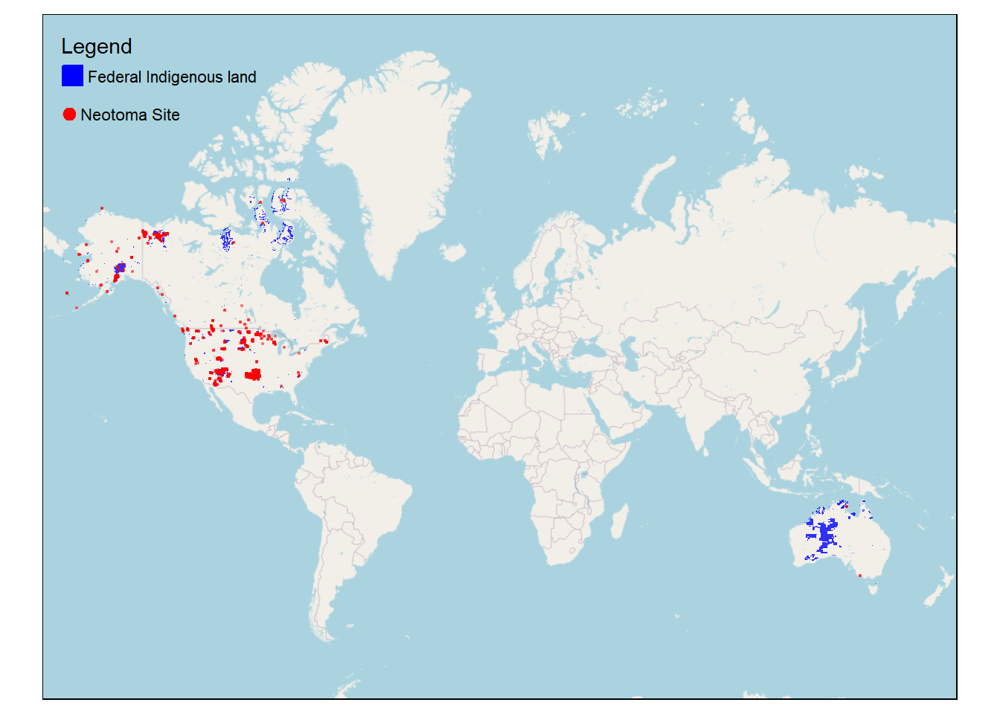

Data Audit: Neotoma’s Human Records
Nick Hoffman
2024-08-28
Introduction
The intention of this data audit is to find any records from the Neotoma Paleoecology Database which potentially violate Neotoma’s statement of values, especially with respect to Neotoma’s goal of aligning with principles of Indigenous data sovereignty.
Are any sites in Neotoma located on federal Indigenous lands?
Method
We did a spatial join for every site in Neotoma with a unique site ID to shapefiles of the borders of federal Indigenous in the United States and Canada, and Indigenous protected areas in Australia, and we tallied and mapped all those which intersected the borders of federal reservations. See list below.
##
|
| | 0%
|
|====== | 8%
|
|============ | 17%
|
|================== | 25%
|
|======================= | 33%
|
|============================= | 42%
|
|=================================== | 50%
|
|========================================= | 58%
|
|=============================================== | 67%
|
|==================================================== | 75%
|
|========================================================== | 83%
|
|================================================================ | 92%
|
|======================================================================| 100%
Next Steps
Our next steps are…
Are any samples in Neotoma from humans?
Method
We downloaded Neotoma’s taxa table and selected any taxon IDs which might describe people.(Taxon ID 6359 is Primates, and 6171 is Mammalia.)
Then we used a Neotoma API to search for any occurrences of those taxon IDs.
The two maps below show the sites they come from, and the table documents what information there is about those samples from the samples table in Neotoma.
## Warning in sf_column %in% names(g): Each row in `x` is expected to match at most 1 row in `y`.
## i Row 10 of `x` matches multiple rows.
## i If multiple matches are expected, set `multiple = "all"` to silence this
## warning.
Human Ancestor Sites
Below I count the occurrences by database and taxon.
Lastly, I count the countries the distinct sites are in.
Next steps
Next steps are….
Are any of Neotoma’s radiocarbon dates derived from humans?
Methods
We searched through two fields (notes and materialdated) from Neotoma’s geochronology table for any occurrences of words from the dictionary below.
Any rows from the geochronology table which contained one of the above words is listed in the table below. Notice that not all of these radiocarbon dates is necessarily problematic, only potentially. Further scrutiny may be needed. (We also checked against CARD’s list of radiocarbon dates deriving from human ancestors that are duplicated in Neotoma, and there was agreement between the two lists: all 60 of CARD’s records that are also in Neotoma are in the below table.)
Next steps
Actually scrutinizes these records.
Are any of the collection units for Neotoma’s records from culturally sensitive areas?
Methods
We used the same dictionary from the last query to search through two fields in Neotoma’s collection units table (location and notes). Any collection units that returned one of the above words is reproduced below.
collunits-location, and collunits-notes.
Next steps
Need to actually scrutinize these records.